> # 916773.mws
> restart;
How many digits, how large the
space to write the decimal digits?
This worksheet is a simpler reworking of another of mine, which dealt with how many digits, and how large a space one needed to write out the decimal digits of the largest known composite Fermat number. For details please refer to the Fermat Number Record section of my web site at:
fermat.htm
Introduction
. The classic
Fermat numbers
are the {
 } with
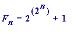
, and the
generalised Fermat numbers
to the base
b
are the {
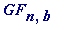
} with
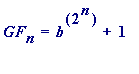
, with
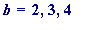
, ... . (Personally I don't
like
this
standard
definition of generalised Fermat numbers - although it is clearly
a
generalisation - and to see why I invite you to view the Fermat 6 section of my web site.) In what follows I set
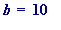
, and will estimate the size of square required to write out the just discovered record sized composite
- which has prime factor 3*
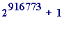
- at, for example 4 digits per inch in the horizontal and vertical. So, let
} with
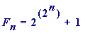
, and the
generalised Fermat numbers
to the base
b
are the {
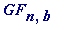
} with
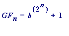
, with
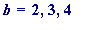
, ... . (Personally I don't
like
this
standard
definition of generalised Fermat numbers - although it is clearly
a
generalisation - and to see why I invite you to view the Fermat 6 section of my web site.) In what follows I set
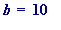
, and will estimate the size of square required to write out the just discovered record sized composite
- which has prime factor 3*
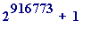
- at, for example 4 digits per inch in the horizontal and vertical. So, let
 be the (base 10)
n
-th
generalised Fermat number
; that is, let:
be the (base 10)
n
-th
generalised Fermat number
; that is, let:
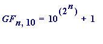 ( 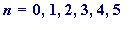 , ... )
This entirely elementary worksheet is solely concerned with two questions :
Question #1
.
How many
digits does
 have, when expressed in decimal form, i.e. in the base 10?
have, when expressed in decimal form, i.e. in the base 10?
Question #2
.
How big
(measured in
Light Years
!) a square board would be needed on which to write
, assuming decimal digits were written at (say) '
 ' digits per inch? [in practice
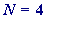
might be a
' digits per inch? [in practice
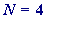
might be a
reasonable value, but we will also look at atomic levels, with (say)
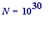
.]
Question #1: how many ? This is entirely elementary, because we can see the decimal digits of , and it has
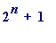 decimal digits, since it is 10000000000...........0000000000001 (having 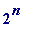 digits following that initial '1')
Let's look at some Maple calculations
. First, though, I will abbreviate
 to
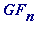
(since the '10' is fixed, and only the '
n
' will vary).
to
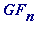
(since the '10' is fixed, and only the '
n
' will vary).
> GF := n -> 10^(2^n) + 1; # defining 'GF' as a function
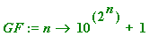
> seq(GF(n), n=0..5); # the first 6 base 10 generalised Fermat numbers
> length(GF(10)); # give the number of digits GF(10) has:

Of course these numbers rapidly increase in size:
> length(GF(18));
which means that has 262,145 digits, and Maple cannot cope with the number of digits that has (being 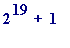 ):
> length(GF(19));
Error, (in GF) object too large
>
say := proc(n)
lprint(`The number of decimal digits
in the base ten`,n,`-th. generalised
Fermat number is`, 2^n + 1)
end:
> say(13);
The number of decimal digits
in the base ten 13 -th. generalised
Fermat number is 8193
> length(10^(2^13) + 1);
> say(21);
The number of decimal digits
in the base ten 21 -th. generalised
Fermat number is 2097153
>
> say(2000);
The number of decimal digits
in the base ten 2000 -th. generalised
Fermat number is 114813069527425452423283320117768198402231770208869520047764273682576626139237031385665948631650626991844596463898746277344711896086305533142593135616665318539129989145312280000688779148240044871428926990063486244781615463646388363947317026040466353970904996558162398808944629605623311649536164221970332681344168908984458505602379484807914058900934776500429002716706625830522008132236281291761267883317206598995396418127021779858404042159853183251540889433902091920554957783589672039160081957216630582755380425583726015528348786419432054508915275783882625175435528800822842770817965453762184851149029377
To save space in the html version of this worksheet I do not execute the following command, but any reader with Maple who downloads the .mws version of this may safely remove the comment sign ('#') and execute the following command
> length(2^916772 + 1);
> # say(916772);
>
The base 10 generalised Fermat number
 has, in fact, 275976 digits, and so clearly it is going to require rather a large board on which to write it down. That, then, brings us to
:
has, in fact, 275976 digits, and so clearly it is going to require rather a large board on which to write it down. That, then, brings us to
:
Question #2:
how big
a board?
This is elementary, and to keep it at its absolute simplest I only consider '
n
' to be
even
, since then we can write out the decimal digits of
 in a square having
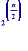
digits along every line of writing, with just a single digit left over.
in a square having
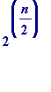
digits along every line of writing, with just a single digit left over.
For example,
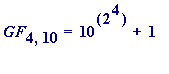
= 10,000,000,000,000,001
can be written out thus:
1000
0000
0000
0000
1
Now to compute the side length
- first in inches - of the square
it would take to write out (really big) base 10 generalised Fermat numbers
 for even
n.
for even
n.
The following (obviously constructed Maple procedure) computes the side length of the square needed to write out the decimal digits of
 at N digits per inch (and in the first examples that follow I choose N = 4):
at N digits per inch (and in the first examples that follow I choose N = 4):
>
inches := proc(n, N)
lprint(`The side length of the square in which
to write the decimal digits of the`, n,`-th.
base 10 generalised Fermat number at`, N, `digits per
inch is`, evalf(sqrt(2^n)/N), `INCHES`)
end:
Of course it's obvious (in advance) that the side length doubles for every increase in n of 2, and I only give the following outputs for illustrative purposes:
> inches(4, 4); # the above example:
The side length of the square in which
to write the decimal digits of the 4 -th.
base 10 generalised Fermat number at 4 digits per
inch is 1. INCHES
> inches(6, 4);
The side length of the square in which
to write the decimal digits of the 6 -th.
base 10 generalised Fermat number at 4 digits per
inch is 2. INCHES
> inches(8, 4);
The side length of the square in which
to write the decimal digits of the 8 -th.
base 10 generalised Fermat number at 4 digits per
inch is 4. INCHES
> inches(10, 4);
The side length of the square in which
to write the decimal digits of the 10 -th.
base 10 generalised Fermat number at 4 digits per
inch is 8. INCHES
> inches(18, 4);
The side length of the square in which
to write the decimal digits of the 18 -th.
base 10 generalised Fermat number at 4 digits per
inch is 128. INCHES
Thus to write out in a square would require a page measuring 128 by 128 inches to write out its decimal digits at 4 digits per inch in the vertical and horizontal.
But let's jump ahead somewhat!!:
> inches(70, 4);
The side length of the square in which
to write the decimal digits of the 70 -th.
base 10 generalised Fermat number at 4 digits per
inch is 8589934592. INCHES
That's just over 135,573 miles!! (Recall that 1 foot = 12 inches, 1 yard = 3 feet, 1 mile = 1760 yards, so 1 mile = 12*3*1760 inches):
> iquo(8589934592, 12*3*1760);
Let's convert to miles [I grew up with inches, feet, yards, ... , miles, and so apologies to anyone used to centimetres etc. Make your own conversions]. Recall there are:
12 inches in a foot
3 feet in a yard
1760 yards in a mile
>
#miles := proc(n, N)
#lprint(`The side length of the square in which
#to write the decimal digits of the`, n,`-th.
#base 10 generalised Fermat number at`, N, `digits
#per INCH is`, floor(evalf(sqrt(2^n))/(N*12*3*1760)),
#`MILES`)
#end:
>
miles := proc(n, N)
lprint(`The side length of the square in which
to write the decimal digits of the`, n,`-th.
base 10 generalised Fermat number at`, N, `digits
per INCH is`, sqrt(2.0^n)/(N*12*3*1760),
`MILES`)
end:
>
> miles(70, 4);
The side length of the square in which
to write the decimal digits of the 70 -th.
base 10 generalised Fermat number at 4 digits
per INCH is 135573.4626 MILES
>
> miles(100, 32);
The side length of the square in which
to write the decimal digits of the 100 -th.
base 10 generalised Fermat number at 32 digits
per INCH is 555308902.9 MILES
>
This is the place to start converting to Light Years .
First, though , I want to make an optical change to the ' lprint ' line in the miles proc: instead of saying "the number of miles is X ... ", I want to alter it to: "the number of miles is 10 to the power of ... ",
>
miles2 := proc(n, N)
lprint(`The side length of the square in which to
write the decimal digits of the base 10 `, n,`-th.
generalised Fermat number at`, N, `digits per INCH
is 10 to the power of`,
log[10](evalf(sqrt((2.0^n)))/(N*12*3*1760)),
`MILES`)
end:
>
> miles2(70, 16);
The side length of the square in which to
write the decimal digits of the base 10 70 -th.
generalised Fermat number at 16 digits per INCH
is 10 to the power of 4.530114697 MILES
> miles2(700, 16);
The side length of the square in which to
write the decimal digits of the base 10 700 -th.
generalised Fermat number at 16 digits per INCH
is 10 to the power of 99.35456333 MILES
>
Now, what I really want is to let 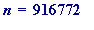 , to see the GIGANTIC size of the generalised Fermat number :
> miles2(916772, 4);
The side length of the square in which to
write the decimal digits of the base 10 916772 -th.
generalised Fermat number at 4 digits per INCH
is 10 to the power of 137982.5317 MILES
>
Two final things to do :
Convert to
light years
Greatly increase
the value of
First, recall the definition of a ' light year ':
Definition . A light year is the distance traversed by light in one year.
Working assumption s.
The speed of light is 186,000 miles per second
The year has 365 days
Converting miles to light years :
> light_year := 186000*60*60*24*356; # miles
>
I want to express that as an approximate power of 10:
> log[10](5721062400000.0);
>
And so a light year is 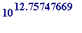 miles , which explains the following alteration of the miles3 procedure:
>
LIGHT_YEARS := proc(n, N)
lprint(`The length of square in which to write
the decimal digits of the base 10`, n,`-th.
generalised Fermat number at`, N, `digits per INCH
is 10 to the POWER of`,
log[10](evalf(sqrt((2.0^n)))/(N*12*3*1760)) - 12.75747668,
`LIGHT YEARS`)
end:
>
And thus - writing at 4 digits per inch - the generalised Fermat number
 would require a square whose size was give by:
would require a square whose size was give by:
> LIGHT_YEARS(916772, 4);
The length of square in which to write
the decimal digits of the base 10 916772 -th.
generalised Fermat number at 4 digits per INCH
is 10 to the POWER of 137969.7742 LIGHT YEARS
>
That is a very great distance (with which I cannot mentally come to terms), and it is linguistically meaningless to merely call it ' astronomically large .'
Just think for a moment of some of the great astronomical distances, from say the nearest star (apart from our own sun, which is a mere 9 light minutes away from us), through some nearby nebula (Andromeda at 2,000,000 light years), and so on ... .
And suppose we went to
atomic levels of writing
, let's say we set:

> LIGHT_YEARS(916772, 10^30);
The length of square in which to write
the decimal digits of the base 10 916772 -th.
generalised Fermat number at 1000000000000000000000000000000 digits per INCH
is 10 to the POWER of 137940.3763 LIGHT YEARS
>